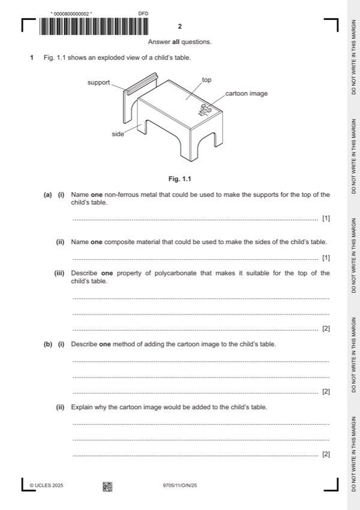

Question 1

Original paper page 2
Part 1(a)(i) — solution
Exemplar answer: 1 AOVR
Aluminium [1]
Do not award the mark if a ferrous metal is named.
Accept other non-ferrous metals such as brass.
Mark points
- Include the ideas shown in the solution above.
Part 1(a)(ii) — solution
Exemplar answer: 1 AOVR
Plywood [1]
Accept other composite materials such as chipboard, engineered
wood, MDF, blockboard, GRP, CFRP.
Mark points
- Include the ideas shown in the solution above.
Part 1(a)(iii) — solution
Exemplar answers: 2 AOVR
Surface that can resist water and food spills and can easily be
wiped clean so that it is hygienic. [1]
Tough [1] so that it will not shatter if toys are banged on the
tabletop. [1]
Available in a wide range of colours [1] so customers can have a
choice of the colour top they choose. [1]
Available in sheets [1] so there is no need to join to make the top.
[1]
Mark points
- Include the ideas shown in the solution above.
Part 1(b)(i) — solution
Exemplar answers: 2 AOVR
A stencil [1] is placed in the correct position and paint and a
paintbrush used to add the image. [1]
Painting by hand after drawing pencil guidelines, drawing on with
felt tipped pens using a rule and set square, pyrography, transfers,
digital printing...
As the scale of production is not stated, accept answers that
describe a method of adding the cartoon image to a one-off table or
a table produced in quantity.
Mark points
- Include the ideas shown in the solution above.
Part 1(b)(ii) — solution
Exemplar answer: 2 AOVR
The child will find the cartoon image attractive [1] so it makes the
table more appealing. [1]
The cartoon image shows that the table [1] is specifically designed
for a child. [1]
University Press & Assessment 2025 Page 5 of 19
9705/11 Cambridge International AS & A Level – Mark Scheme October/November 2025
Guidance
Mark points
- Include the ideas shown in the solution above.